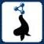

")
")
SEALS
El objetivo del proyecto SEALS es el de crear una infraestructura independiente, abierta, escalable, ampliable y sostenible, la plataforma SEALS, que permita la evaluación remota de aplicaciones basadas en tecnología semántica. Esta plataforma permitirá a los investigadores, desarrolladores y usuarios la efectiva y objetiva comparación de aplicaciones basadas en esta tecnología.
La plataforma SEALS integrará un conjunto de servicios y datos de test para la evaluación de aplicaciones semánticas que se emplearan en dos campañas mundiales de evaluación. El resultado de estas campañas nos ayudará a determinar conjuntos de herramientas compatibles para el desarrollo de nuevas aplicaciones basadas en esta tecnología.
Inicialmente se consideraran cinco tipos diferentes de aplicaciones semánticas: herramientas para el diseño de ontologías, sistemas para el almacenamiento y razonamiento de datos semánticos, sistemas para alinear ontologías heterogéneas, herramientas para la búsqueda semántica y aplicaciones para el desarrollo y explotación de servicios web semánticos. La plataforma SEALS ofrecerá un acceso sencillo y gratuito a los resultados públicos de las evaluaciones ejecutadas.
Rol de la UPM en SEALS
UPM es el coordinador del proyecto y por tanto, responsable de liderar las áreas de gestión y administración que demande el proyecto. UPM además lidera el desarrollo de la plataforma SEALS donde somos responsables de la implementación de los dos componentes principales. Nuestras contribuciones también son relevantes en la organización de las dos campañas de evaluación y en el diseño de las evaluaciones que se emplearan en dichas campañas.
Participantes
Las personas involucradas en el desarrollo del proyecto SEALS son:
Publicaciones y principales resultados
Publicaciones:
- Supporting Experimentation via an Evaluation Infrastructure for Semantic Technologies. Poster at the Future Internet Symposium (FIS) 2009, Berlin, Germany, September 2009. Raul Garcia-Castro, Asuncion Gomez-Perez, Liliana Cabral, Lyndon Nixon.
Información adicional
- Fecha de inicio: 01/06/2009
- Fecha de finalización: 31/05/2012
- Presupuesto global del proyecto: 4.733.495 €
Ofertas de trabajo
- Beca para Evaluación de Tecnologías Semánticas.Ver oferta.

Created under Creative Commons License - 2015 OEG.